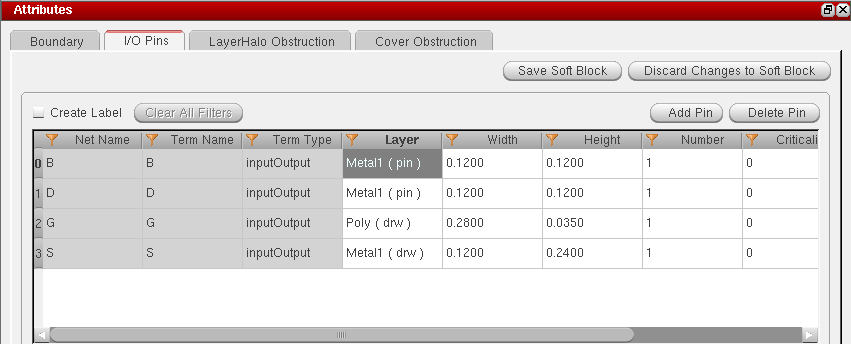
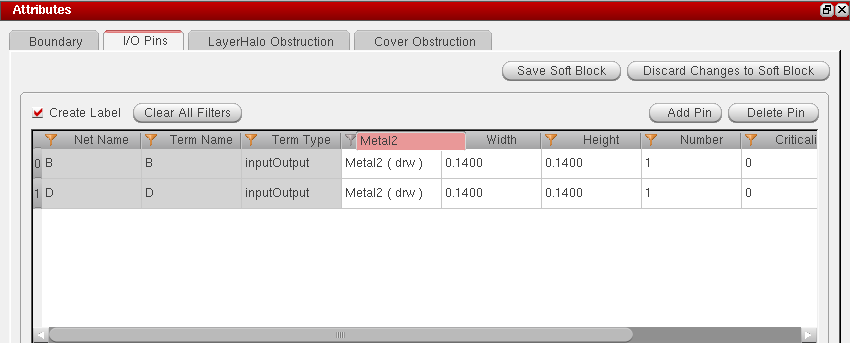
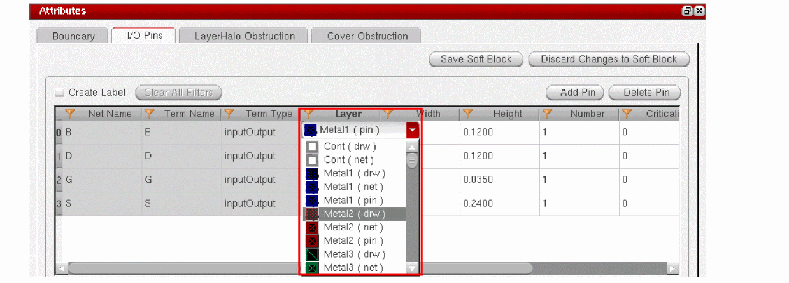
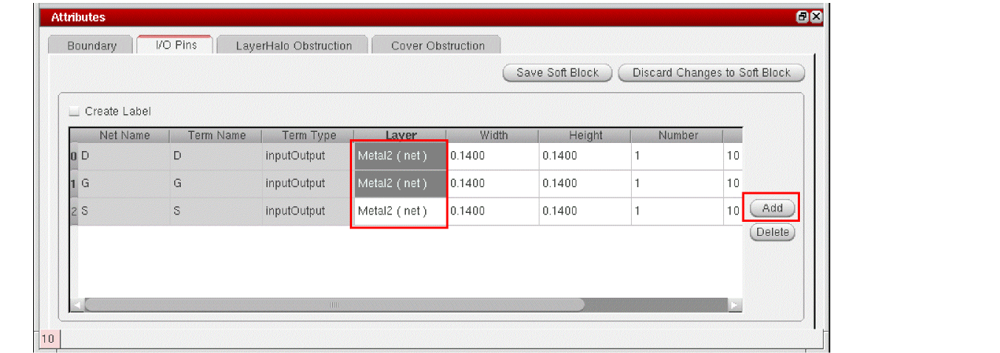
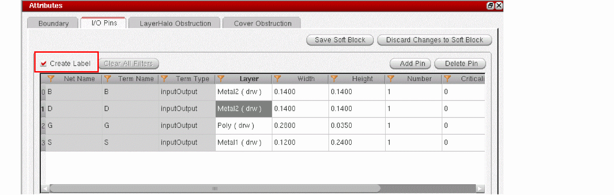

Specifying I/O Pins
In addition to defining layer-based rules, you can define layer purpose based rules while defining the soft block parameters in the I/O Pins tab.
To specify I/O pins for the selected soft block:
-
Click the I/O Pins tab to see the pins in the design.
CPH honors existing net process rule override (net PRO) definitions in the schematic and displays the values for corresponding options, such as the pin Width and pin Layer. The net PRO values that are read from the schematic are used for initial population of the respective fields. However, you can override these values manually. You must ensure that the net PRO constraint values are not violated. See Support for Net PRO Definitions.
All the fields with a white background are editable.
 -
To change the value for an individual cell:
-
Double-click the cell.If a drop-down arrow appears, select a new value from the drop-down list. If the value in the cells gets highlighted, type in a new value directly.
-
Click any where within the editable area of the tab page.
The value of the selected cell changes to the new value you selected.

-
Double-click the cell.If a drop-down arrow appears, select a new value from the drop-down list. If the value in the cells gets highlighted, type in a new value directly.
-
To change the value for multiple cells within a column:
-
Hold down the
Ctrlkey and select the cells in a column that you want to update.-
If you want to select all the cells in the column, select the column header.With the
Ctrlkey pressed, double-click one of the selected cells and choose the new value from the value list box that appears. -
Alternatively, release the
Ctrlkey and press the space bar to display the value list box for the column. Then, choose an appropriate value to apply. If the selected cell is a text field, pressing the space bar makes the text editable. You can then type in the new value directly.
-
If you want to select all the cells in the column, select the column header.With the
-
Click any where within the editable area of the tab page. The value of the selected cells changes to the new value you selected.

-
Hold down the
-
To filter rows based on a keyword, double-click the column name and specify the keyword. Only those rows with matching values are filtered out and listed.
-
To add a new pin:
-
Click Add.
A new row is added to the table with a default Net Name and Term Name. You can change these, if required. -
The other fields display their default values. Edit the values in the other fields as required.
- To know more about the default values in the Width and Height fields, see Initial Pin Width Setting and Initial Pin Height Setting.
- To specify the layers that need to be listed in the Layer column, use the initIOPinLayerNames or initIOPinPurposeNames environment variable, as appropriate.
-
Click Add.
-
To delete a pin, click Delete.
The selected pin is removed from the list. -
To generate labels for all the pins in the selected soft block, select the Create Label option.
To generate labels for all the pins of all the soft blocks in your design: -
Click Save Soft Block.
The I/O pin parameters are set. The Attributes pane is disabled and the Instances pane re-enabled.
Initial Pin Width Setting
The initial pin width value displayed in the Width field is determined in the following order:
-
If there are any Process Rule Overrides (PROs) on the current net in the schematic view, then the
minWidthis determined based on the net PROs values. -
If there is no PRO, but there is an existing layout, then the
minWidthis derived from the layout, assuming that the pin widths in the layout are updated. -
When neither of the above exist, the value of initPinWidth environment variable is used the set the
minWidthvalue. - In the absence of a PRO, layout, and initPinWidth environment variable, the default technology file value is considered.
Initial Pin Height Setting
The initial pin height value displayed in the Height field is determined in the following order:
-
If there are any Process Rule Overrides (PROs) on net in the schematic view, then the
minHeightis determined based on the net PROs values. -
If there is no PRO, but there is an existing layout, then the
minHeightis derived from the layout, assuming that the pin heights in the layout are updated. -
When neither of the above exist, the value of initPinHeight environment variable is used the set the
minHeightvalue.
In the absence of a PRO, layout, and initPinHeight environment variable, the default technology file value is considered.
Related Topics
Soft Block Global Options Form
Soft Block Mode in the CPH Window
Return to top